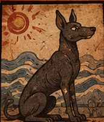
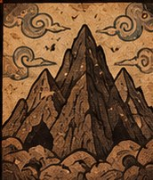
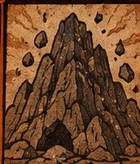
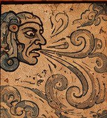
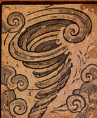
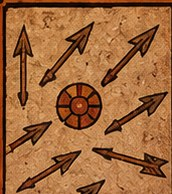
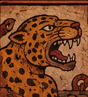
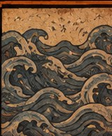
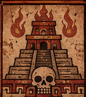

EL VIAJE DE LAS ALMAS
Para los antiguos mexicas, la muerte no significaba simplemente el final de la existencia. Se creía que algunas almas debían realizar un largo recorrido por el Mictlán, un inframundo formado por diferentes regiones y pruebas. Este lugar era gobernado por Mictlantecuhtli, señor de los muertos, y Mictecacíhuatl, señora del inframundo. El viaje podía durar cuatro años. Durante ese tiempo, las almas debían enfrentarse a obstáculos naturales y sobrenaturales hasta alcanzar su destino final.

1. ITZCUINTLAN
El primer nivel era conocido como el lugar de los perros. Aquí las almas llegaban a las orillas de un río que debían cruzar para continuar su camino. La ayuda del Xoloitzcuintle era fundamental, ya que este perro acompañaba a las almas y las guiaba hasta la otra orilla. Según la creencia, no todas podían cruzar: el perro debía reconocer a la persona y aceptar ayudarla.

2. TEPÉME MONAMICTLAN
Este nivel estaba formado por dos enormes montañas que chocaban constantemente entre sí. Las almas tenían que encontrar el momento adecuado para atravesar el estrecho espacio entre ambas montañas sin quedar atrapadas. Representaba una prueba de paciencia, resistencia y habilidad para continuar avanzando a pesar del peligro.

3. ITZTÉPETL
El tercer nivel era una montaña cubierta de piedras afiladas de obsidiana, un material volcánico muy utilizado por los mexicas para fabricar herramientas y objetos. Las almas debían atravesar este terreno complicado mientras enfrentaban los filos de las rocas. Este lugar representaba las dificultades físicas que todavía les esperaban durante su recorrido.

4. CEHUELOYAN
En esta región predominaba un frío extremo. El paisaje estaba cubierto de hielo y las almas tenían que soportar temperaturas muy bajas mientras avanzaban. También se decía que fuertes vientos transportaban fragmentos de obsidiana, haciendo todavía más difícil el camino. Era una prueba de resistencia ante las condiciones del inframundo.

5. PANCUETLACALOYAN
Este lugar era conocido por sus corrientes de viento tan intensas que podían levantar y arrastrar a las almas. El viento dificultaba mantener el rumbo y avanzar con seguridad. Las almas debían soportar estas corrientes para no perder el camino hacia las siguientes regiones.

6. TEMIMINALOYAN
En este nivel las almas se encontraban con un camino peligroso por el que volaban flechas constantemente. Estos proyectiles representaban una amenaza que debían superar para continuar su viaje. El lugar simbolizaba los conflictos y peligros que todavía podían aparecer incluso después de haber recorrido varias regiones del Mictlán.

7. TEYOLLOCUALOYAN
Esta región era conocida por la presencia de animales salvajes que atacaban a las almas. Se describía como un lugar habitado por criaturas peligrosas que representaban una nueva prueba para quienes buscaban llegar al descanso final. Después de superar los obstáculos anteriores, todavía debían enfrentarse a los peligros de esta región.

8. APANOAHUALOYAN
En este nivel las almas debían atravesar grandes extensiones de agua y superar las dificultades de este recorrido acuático. Era una de las últimas pruebas antes de llegar al destino final. El agua representaba una frontera que separaba a las almas de su descanso definitivo.

9. CHICONAUHMÍCTLAN
Este era el destino final del largo viaje de las almas. Después de superar las pruebas y dificultades de las regiones anteriores, finalmente podían llegar ante Mictlantecuhtli y Mictecacíhuatl. Al alcanzar este lugar, las almas conseguían el descanso eterno y concluían su recorrido por el inframundo mexica.